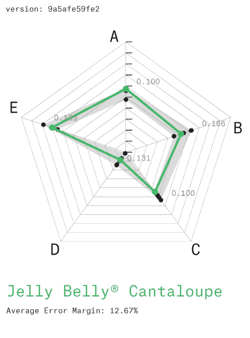

Fig. 1 Flavor Spectrum
Fig. 1 Flavor SpectrumLinear classification of flavors9
Lanza T.1 and Benque D.2
1: Lanza affiliation 2: Benque affiliation
We disclose an experimental apparatus and novel methods for ester synthesis in artificial flavor production using off-the-shelf ingredients. This new approach is the direct outcome of our ongoing research in flavor mapping using mass spectrometry on convenience foods. We detail preliminary findings and experimental design, as well as a framework to build on these findings using two key innovations: the Flavor Markup Language (FML) and Synchronous On-Demand Aroma (SODA) Streaming API. On this basis we propose a new universal and distributed paradigm for computational 1 flavor synthesis.
The analysis and classification of flavors along a continuous spectrum2 has long been a key challenge for both food science and industry. Ester chain optimisation has made rapid progress in the last decade but some hurdles remain–a coherent systems approach still falls short of unifying niche areas such as coffee flavor3. Consumer "clean label"4 concerns are also placing existing systems under increasing pressure.
In this setting, our initial research was concerned with flavor mapping following a network-based approach5 and focusing on convenience foods6. A typical study would use High Performance Liquid Chromatography (HPLC) to separate off-the-shelf products into their constituent components. The resulting fraction pool would then be quantified7 and modelled computationally8 to generate correlation analysis reports (fig. 2) between a pool of up to 4 products and the full flavor spectrum (fig. 1). Such results are typically commissioned and used to optimise production systems by 1) Reducing costs across multiple product outputs. 2) Maximising the use of waste fractions into new outputs.
Fig. 1 Flavor Spectrum
Linear classification of flavors9
 A
A
Fig. 2 Flavor Correlation Chart
A. Computational model output exemplar showing Correlation Coefficient (CC) for a given triple. B. Full result set
See full dataset
 B
B
One recent study involved a top-tier market sample of 52 products on which we were running our established series of analysis methods. The sample pool was a median cross section of "shopping basket"10 items.
We were using a Correlation Coefficient variable between 0.0 and 1.0 as a proxy for mapping multi-dimensional flavor space, with 1.0 as the hypoethical perfect match with the full flavor spectrum. We routinely witnessed correlation coefficients up to a maximum of 0.54, however a specific sample of 3 products yielded a score of 0.95, meaning the cumulative pool of their components almost covered the entire flavor space.
We isolated the 3 products (Coca-Cola Company's Coca-Cola Classic™, Fanta Orange™ and Sprite™) and were able to reproduce coefficients between 0.94 and 0.96 in subsequent experiments. Checking the spectrum footprint against our existing databases revealed that the missing 0.06 to 0.04 could be closed significantly with the addition of a fourth source: Monosodium Glutamate (MSG)11. The resulting pool (further referred to as CFS(m)) was ranked at up to 0.984 correlation coefficient by our model (fig. 3). Given the 0.15 error margin generally accepted by the flavor industry this is equivalent to a confident match with the full flavor spectrum.

Fig. 3 The CFS(m) Correlation
3.a. Initial Correlation result of the CFS sample: Coca-Cola Company's Coca-Cola Classic™, Fanta Orange™ and Sprite™ against the flavor spectrum 3.b. Footprint Record for MSG. 3.c. Combined CFS(m) Correlation showing a coefficient of 0.992
On the basis of this exceptional match, we designed a study to test the hypothesis chemically, the results of which are detailed here. Our aim was primarily to test the viability of CFS(m) in reproducing a range of flavors from our convenience foods database and, should this be successful, to establish protocols for the systematisation of CFS(m) synthesis for further experimentation, reproducibility and characterization.
We settled on High Performance Liquid Chromatography (HPLC) for its flexibility at this exploratory stage in the research. Compatibility was a key constraint as our setup included a de-gassing system for 3 inputs (Coca-Cola Classic, Fanta Orange and Sprite) and a pellet solution for 1 input (MSG). Solutions were then pumped into microfluidic lab-on-chip devices for separation, resulting in 43 different compound feeds. These were all connected to a multichannel peptide synthesizer for re-assemby into the final output. Synthesis instructions were compiled by the FML parser and transmitted to the synthesizer synchronously using our SODA Streaming API.

Fig. 4 Experimental Design
A: HPLC Rack with 4 input banks Bank C: Coca-Cola Classic™ (liquid) Bank F: Fanta Orange™ (liquid) Bank S: Sprite™ (liquid) Bank M: Monosodium Glutamate (solid/pellet) B: Syringe Pump. Accuracy of ±0.5%, max. flow: 0.5ul C: Microfuidic Chip Separators D: Gama Inc. Soprano™ Peptide Synthesizer E: Multi-pipette with inlet valve - capacity: 50ml

Fig. 5 Lab-On-Chip Microchannel design
Showing separation pathways for Coca-Cola Classic into its 15 basic components12 A: Circuit Design B: Photograph showing micro channel etching and separations.
FML is a fully defined XML data description standard designed for the exchange of CFS(m) recipes. It is designed as an open standard and as a subset of Extensible Markup Language (XML). FML defines a set of rules for encoding documents in a format that is both human-readable and machine-readable. A working data structure (fig. 6) was used for the purpose of this study while the full schema definition is being drafted by the team.
Please see example files in the FML directory
FML File
|– Author
| |- Name
| |- Email
|
|- Recipe
|- Title
|- Date Created
|- Date Modified
|- Version
|- Notes
|- Unit declarations
|- Source (C,F,S or m)
|- Compounds
|- Esters
Fig. 6 FML Data Structure - see example file
The success of CFS(m) flavor replication was assessed using randomized blind tests. These were conducted for 3 case studies, using a random sample of 10 convenience foods consumers. The subjects were identified in supermarket aisles and chosen for their familiarity with the product being tested. Informed consent was obtained before any studies were carried out.
For optimal taste sensitivity, subjects were tested in the fasting state. Smokers were asked not to smoke for the 2 hours prior to taste testing. Water was allowed up to the time of testing13. Taste testing was done by using the three drop stimulus technique14: one drop of flavor extract from the target product, one drop of water (placebo) and one drop of CFS(m) test solution. The 3 drops were presented in a varied order in a mixed design15.
Blind taste tests were conducted for each case study. After each stimulus, subjects were asked to name, if any was recognized, the product they were tasting. Flavor profiles were characterized by asking subject to grade the strength of 5 characteristics: sweetness, acidity, saltiness, bitterness and richness/umami on a scale of 0 to 10.
Three products (Jelly Belly Cantaloupe, Doritos Cool Ranch and Maggi 2-Minute Noodles Tom Yam) were chosen as case studies for their popularity and diversity. We flavor-profiled them using a static headspace GC-MS method16. The resulting target profiles were then replicated in FML (see full recipes in the FML appendix) and synthesized using our experimental CFS(m) workflow.
Our syntheized results were then compared to the original target profiles following our blind test protocol. Results were plotted as radar graphs (fig. 7) showing the target flavor profile against the error margin defined by blind test results. This showed that CFS(m) replicas were indistiguishable from their target profiles by flavor industry standards.
1
 2
2
 3
3
Fig. 7 Blind Test results: Flavor Profile matching
3 case studies: 1: Jelly Belly Cantaloupe 2: Doritos Cool Ranch 3: MAGGI 2-Minute Noodles Tom Yam. Flavor profiles are shown as A: Sweetness, B: Acidity, C: Saltiness, D: Bitterness and E: Richness/Umami.
The methods and protocols developed in this study demonstrate that flavor can be replicated in a quantitative and systematic manner17 through a modular computational approach. This lays the foundations for a paradigm shift in flavor synthesis.
Our experiments confirm the hypothesis that Coca-Cola Company's Coca-Cola Classic™, Fanta Orange™ and Sprite™, with the addition of Monosodium Glutamate (MSG), can be broken down into their basic components and re-combined to form an ester palette from which every flavor in the world can be recreated. Analogies to color theory's additive (RGB) or substractive (CMYK) color spaces18 suggest that flavor synthesis may have found, at long last, its primary colors in the form of CFS(m). Such a flavor system has the potential to increase the efficiency of our industry by several orders of magnitude, while maintaining an acceptable degree of flavor diversity.
The variety of digital color models currently in operation for specific purposes (eg. RGB, HSV, Hexadecimal, RAL, Pantone™, etc) highlight the potential for standardisation and replicability across global networks of suppliers, industries and consumers. Our methods demonstrate that the FML file format provides a robust data structure for flavor semantics while remaining fairly readable. We are confident that it will encourage further research from the community that will expand the scope of characterized CFS(m) flavor space.
Furthermore, our system builds on off-the-shelf ingredients which makes it compliant by default with existing regulations. This will transform long-winded and costly regulatory approval processes into mere formalities and allow researchers to focus on (re)creating great flavors. The adoption of CFS(m) as a standard by the wider flavor community will enable a new era for flavor synthesis, where any flavor in the world can be easily reproduced and manipulated.
Ahnert, S.E. (2013). Network analysis and data mining in food science: the emergence of computational gastronomy. Flavour, 2:4.↩
Matthews, J. S., Sugisawa, H. and Mac Gregor, D. R. (1962), The Flavor Spectrum of Apple-Wine Volatiles. Journal of Food Science, 27: 355–362.↩
Shibamoto, T. (1991). An overview of coffee aroma and flavor chemistry. In Quatorzieme colloque scientifique international sur le cafe, San Francisco, 14-19 juillet 1991. (pp. 107-116).↩
Zink, D. L. (1997). The impact of consumer demands and trends on food processing. Emerging Infectious Diseases, 3(4), 467.↩
Ahn, Y. Y., Ahnert, S. E., Bagrow, J. P., & Barabási, A. L. (2011). Flavor network and the principles of food pairing. Scientific reports, 1.↩
Verlegh, P. W., & Candel, M. J. (1999). The consumption of convenience foods: reference groups and eating situations. Food Quality and Preference, 10(6), 457-464.↩
Caballero-Ortega, H., Pereda-Miranda, R., & Abdullaev, F. I. (2007). HPLC quantification of major active components from 11 different saffron (Crocus sativus L.) sources. Food Chemistry, 100(3), 1126-1131.↩
Bhat, N. V., Minderman Jr, P. A., McAvoy, T., & Wang, N. S. (1990). Modeling chemical process systems via neural computation. Control Systems Magazine, IEEE, 10(3), 24-30.↩
Suffet, I. H., Brady, B. M., Bartels, J. H. M., Burlingame, G., Mallevialle, J., & Yohe, T. (1988). Development of the flavor profile analysis method into a standard method for sensory analysis of water. Water Science & Technology, 20(8-9), 1-9.↩
Manchanda, P., Ansari, A., & Gupta, S. (1999). The “shopping basket”: A model for multicategory purchase incidence decisions. Marketing Science, 18(2), 95-114.↩
This American Life - Episode 427: Original Recipe - Feb. 11th, 2011 - Recipe↩
Mahajan, S. K., Prasad, A. S., Lambujon, J., Abbasi, A. A., Briggs, W. A., & McDonald, F. D. (1980). Improvement of uremic hypogeusia by zinc: a double-blind study. The American journal of clinical nutrition, 33(7), 1517-1521.↩
Henkin, R. I., Gill Jr, J. R., & Bartter, F. C. (1963). Studies on taste thresholds in normal man and in patients with adrenal cortical insufficiency: the role of adrenal cortical steroids and of serum sodium concentration. Journal of Clinical Investigation, 42(5), 727.↩
Ibid↩
Maeztu, L., Sanz, C., Andueza, S., Paz de Pena, M., Bello, J., & Cid, C. (2001). Characterization of espresso coffee aroma by static headspace GC-MS and sensory flavor profile. Journal of Agricultural and Food Chemistry, 49(11), 5437-5444.↩
Henkin, R. I., Schecter, P. J., Friedenwald, W. T., Demets, D. L., & Raff, M. (1976). A double blind study of the effects of zinc sulfate on taste and smell dysfunction. The American journal of the medical sciences, 272(3), 285-299.↩
Newton, I. (1704). Opticks: or a treatise of the reflexions, refractions, inflexions and colours of light.↩